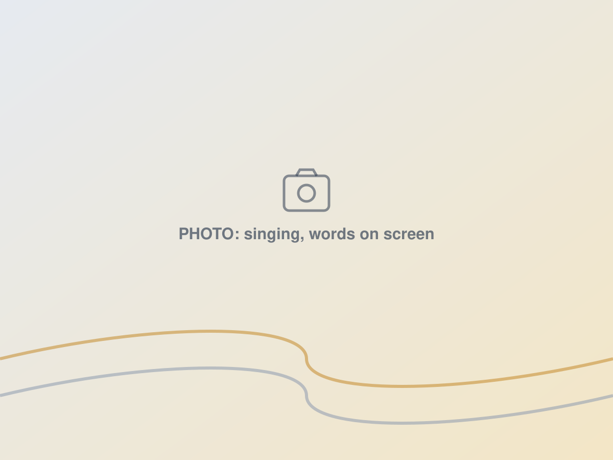
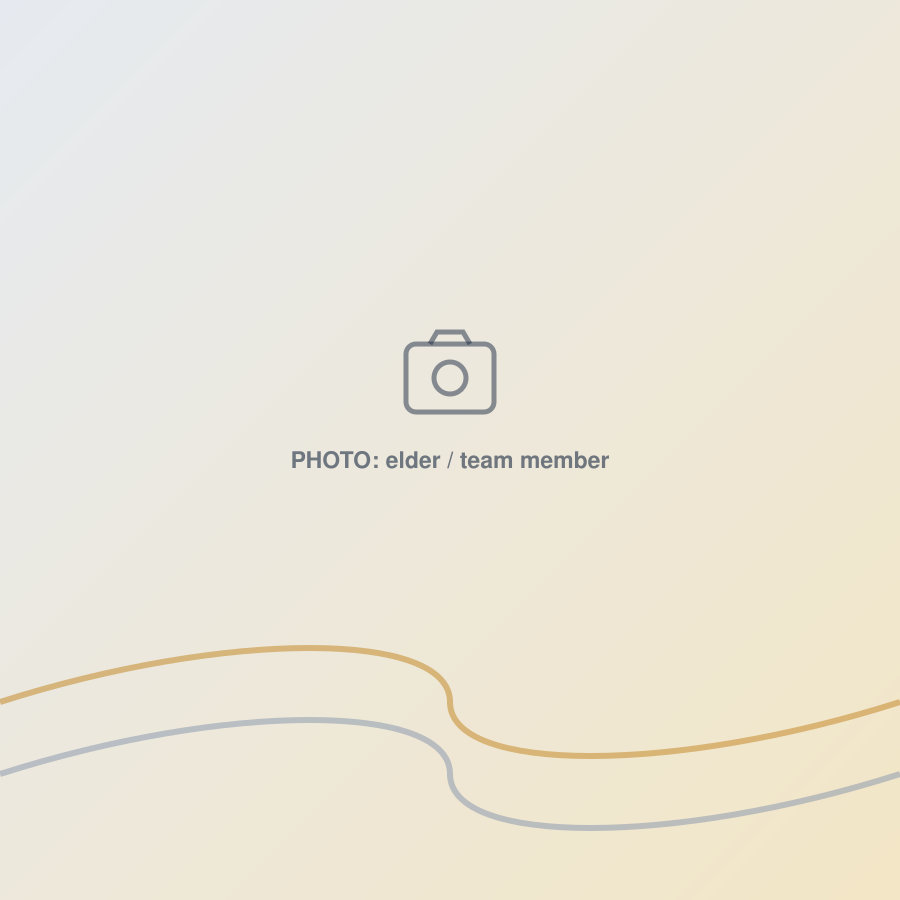

A church for the second half of life.
Who we are, what we believe, and the people who lead us.
Why a church for people over 55?
Every day, about 10,000 Americans turn 65. By 2030, every Baby Boomer will be past that line. It is the largest, fastest-growing group of people in the country.
Meanwhile, nearly every new church is designed for young families, with the lights, the volume, and the pace to match. Older adults get a "senior ministry" on Tuesday morning, if they get anything. Many quietly stop coming. Many more never started.
Grey Wave is not a program inside a church. It is a church. Built for you, led with you, and aimed at the people in your life who think God is finished with them. He is not.
We started in the fall of 2026 with twelve people in a borrowed room. We intend to be a lot more than that, and to help start churches like this one wherever people are growing older and wondering what's next.

Grey Wave exists to help people over 55 thrive in the fourth quarter of life: with Jesus, with each other, and with something worth getting up for.
Games are won in the fourth quarter. Nobody sits it out. That's how we think about these years.
Faith that still grows
Plain teaching, honest questions, and a God who is not finished with you.
What that looks like: a message you can follow every Sunday and a weekday group if you want to go deeper.
Friends who show up
People who know your name, notice when you're missing, and come to the hospital when the news is bad.
What that looks like: coffee before and after, a table you're expected at, a phone call when you miss a week.
Purpose that outlasts you
Decades of skill, stories, and faith put to work in the lives of grandchildren, neighbors, and people who need what you have.
What that looks like: real jobs to do, people to mentor, and a church that leaves something behind.
"They will still bear fruit in old age; they will stay fresh and green."
Psalm 92:14Simple faith. Nothing hidden.
Grey Wave is an independent Christian church in the same family as Ignite Church Planting and hundreds of Christian churches across Illinois and Indiana. The idea has been the same for two hundred years: get back to the simple church of the New Testament.
Jesus alone is Savior and Lord.
Not a denomination, not a preacher, not a program.
The Bible is our only rulebook.
Where it speaks, we speak. Where it's silent, we leave room.
No creed but Christ.
We ask people to trust and follow Jesus, not to sign a statement.
Baptism for anyone old enough to choose it.
By immersion, as the New Testament describes. It is never too late.
Communion every Sunday.
The Lord's table is the center of our gathering, not an add-on.
Led by our own people.
Elders from among us, answerable to no headquarters.
"In essentials, unity. In non-essentials, liberty. In all things, love."
The people who lead us.
Grey Wave is led by a lead pastor and a team of elders drawn from the congregation. Elders will be named as the church is established.
Lance Hurley
Lance planted his first church in Manteno, Illinois, in 1981, fresh out of Lincoln Christian College, with twenty people. Nineteen years later that church was 250 strong and more than 400 people had been baptized. He went on to pastor in Florida, plant Cornerstone Christian Church in Glen Ellyn in 2005, and serve as Executive Director of Ignite Church Planting. He and Darla have been married 42 years.
Darla Hurley
Darla keeps the coffee on, the prayer list current, and the new faces from slipping out unnoticed. If someone brought you a meal or called when you missed a week, Darla probably set it in motion.

Elders
Grey Wave will be led by elders chosen from among our own people, the New Testament way. If you've served as an elder before and this church is your church now, we'd like to talk.
Started with Ignite Church Planting.
Ignite has been starting churches across Chicagoland for over a hundred years. Its mission is accelerating Jesus' mission by starting churches, and its values are prayer, planters, partners, and possibilities. Grey Wave is one of those possibilities.
If you lead a church with a large, faithful, aging congregation and you want to see something like Grey Wave in your town, we want to hear from you.

Come see for yourself this Sunday.
One hour, daytime, no dress code. We'll save you a seat.